阅读词表
| 词条 | 拼音 | 类型 | 说明 |
|---|---|---|---|
| 人祭 | rén jì | concept | 以人作为祭品的祭祀行为。 |
| 郑州商城 | zhèng zhōu shāng chéng | site_or_culture | 商代早期大型城址。 |
| 献祭 | xiàn jì | concept | 向神灵、祖先等奉献祭品。 |
| 祭祀坑 | jì sì kēng | concept | 考古遗址中用于掩埋祭品或举行祭祀的坑穴。 |
| 宫殿区 | gōng diàn qū | concept | 都邑中宫殿和王室活动集中的区域。 |
| 小双桥 | xiǎo shuāng qiáo | site_or_culture | 郑州西北中商时期重要遗址。 |
| 偃师商城 | yǎn shī shāng chéng | site_or_culture | 商代早期城址，位于二里头以东。 |
| 窖藏 | jiào cáng | concept | 将器物埋藏于地下的行为或遗迹。 |
| 头盖骨 | tóu gài gǔ | concept | 颅骨顶部，文中涉及加工成碗状器物。 |
| 夯土 | hāng tǔ | concept | 把土层层夯实形成建筑基础或城墙的技术。 |
| 人牲 | rén shēng | concept | 被用于祭祀或献祭的人。 |
| 殷墟 | yīn xū | site_or_culture | 晚商都邑遗址，甲骨卜辞的重要出土地。 |
| 良渚 | liáng zhǔ | site_or_culture | 长江下游新石器时代重要考古文化和古城遗址。 |
| 铜器窖藏坑 | tóng qì jiào cáng kēng | artifact | 集中埋藏青铜器的坑穴。 |
| 遗存 | yí cún | concept | 古代活动留下的遗物、遗迹或现象。 |
| 王权 | wáng quán | concept | 王的政治统治权力。 |
| 穿孔 | chuān kǒng | concept | 贯穿形成孔洞，文中多指颅骨创口。 |
| 盘龙城 | pán lóng chéng | site_or_culture | 湖北武汉附近早商城址，是商朝南方重要据点。 |
| 埋祭 | mái jì | concept | 将祭品埋入地下的祭祀方式。 |
| 坑底 | kēng dǐ | concept | 坑穴底部，常用于描述考古遗迹。 |
| 祭品 | jì pǐn | concept | 祭祀时献给神灵或祖先的物品。 |
| 捆绑 | kǔn bǎng | concept | 用绳索等束缚身体。 |
| 丛葬坑 | cóng zàng kēng | concept | 集中埋入多人尸骨或遗骸的坑。 |
| 肢解 | zhī jiě | concept | 将肢体切割分解。 |
| 锐器 | ruì qì | concept | 带尖刃或锋利边缘的器物。 |
| 仲丁 | zhòng dīng | person | 商王名，文中讨论中商迁都和内乱。 |
| 二里冈 | èr lǐ gāng | site_or_culture | 郑州一带早商文化的重要遗址和文化命名地。 |
| 石峁 | shí mǎo | site_or_culture | 陕北大型史前城址。 |
| 九世之乱 | jiǔ shì zhī luàn | text | 《史记》所记商代中期王室长期内乱。 |
| 铜鼎 | tóng dǐng | bronze_item | 青铜鼎，古代炊煮或礼仪重器。 |
| 地层 | dì céng | concept | 遗址中不同时期堆积形成的层次。 |
| 宫城 | gōng chéng | concept | 城邑内宫殿或王室建筑集中的城垣区域。 |
| 灰坑 | huī kēng | concept | 遗址中含灰土、废弃物或祭祀遗存的坑穴。 |
| 埋祭改革 | mái jì gǎi gé | concept | 文中指用埋藏青铜器等器物替代杀牲杀人的改革尝试。 |
| 老牛坡 | lǎo niú pō | site_or_culture | 西安附近商代遗址，文中涉及商人据点和人祭。 |
| 岳石文化 | yuè shí wén huà | site_or_culture | 山东地区龙山以后、商代以前的考古文化。 |
| 铜礼器 | tóng lǐ qì | bronze_item | 用于礼仪或祭祀的青铜器。 |
| 原始瓷 | yuán shǐ cí | artifact | 早期高温釉陶或瓷器形态。 |
| 基址 | jī zhǐ | concept | 建筑物遗留下来的基础位置。 |
| 下颌骨 | xià hé gǔ | concept | 下颌部骨骼。 |
| 坑口 | kēng kǒu | concept | 坑穴在地表或开口处的形状和范围。 |
| 掷埋 | zhì mái | concept | 考古报告用语，指尸体或骨骼被抛掷式埋入坑中。 |
| 夯土台基 | hāng tǔ tái jī | concept | 用夯土筑成的高台式建筑基础。 |
| 垣曲商城 | yuán qū shāng chéng | site_or_culture | 山西垣曲早商城址。 |
| 东下冯商城 | dōng xià féng shāng chéng | site_or_culture | 山西夏县早商城址。 |
| 北福地 | běi fú dì | site_or_culture | 河北易县史前遗址，文中涉及埋藏器物祭祀。 |
| 屈家岭文化 | qū jiā lǐng wén huà | site_or_culture | 长江中游新石器时代文化。 |
| 石家河文化 | shí jiā hé wén huà | site_or_culture | 长江中游新石器时代晚期文化。 |
| 陶寺 | táo sì | site_or_culture | 山西襄汾一带龙山时代重要遗址。 |
| 夔 | kuí | added | 古代传说中的一足神兽或龙形怪物。 |
| 饕餮 | tāo tiè | rare_word | 古代传说中的贪食猛兽名，常用于青铜纹饰名称。 |
| 粟 | sù | rare_word | 古代重要旱作粮食，通常指小米。 |
| 鬲 | lì | artifact | 古代炊器，袋状足。 |
| 骨簪 | gǔ zān | artifact | 骨制发簪。 |
| 兽面饕餮纹 | shòu miàn tāo tiè wén | artifact | 青铜器常见兽面纹样。 |
| 绿松石 | lǜ sōng shí | artifact | 蓝绿色矿物，古代常作装饰嵌片。 |
| 宗教改革 | zōng jiào gǎi gé | concept | 文中指试图以埋藏器物替代杀人杀牲的祭祀变革。 |
| 牲祭 | shēng jì | concept | 以牛、羊、猪、狗等动物作为祭品的祭祀。 |
| 巫术 | wū shù | concept | 古代借助神秘仪式影响现实的信仰行为。 |
| 神权 | shén quán | concept | 以神灵、祭祀权威支撑的统治权力。 |
| 人殉 | rén xùn | concept | 以人随葬或陪葬的行为，常见于古代贵族墓葬。 |
| 钝器 | dùn qì | concept | 无锋刃但可打击致伤的器物。 |
| 浮选 | fú xuǎn | concept | 考古中用水分离土样里的植物种子等细小遗存的方法。 |
| 太戊 | tài wù | person | 商王名，文中推测与埋祭改革有关。 |
| 河亶甲 | hé dǎn jiǎ | person | 商王名，史书记载其迁都于相。 |
| 祖乙 | zǔ yǐ | person | 商王名，史书记载其迁都于邢。 |
| 隞 | áo | place | 商代都城，在今河南荥阳市北、敖山南。 |
| 壁龛 | bì kān | added | 墙壁或坑壁上凿出的供放置物品的小龛。 |
| 甲骨卜辞 | jiǎ gǔ bǔ cí | text | 刻写在龟甲兽骨上的占卜文字。 |
| 卜辞 | bǔ cí | text | 甲骨占卜后刻写或记录的辞句。 |
| 龛 | kān | rare_word | 供奉或安置物品的小空间；文中指祭祀坑壁上的壁龛。 |
| 眼眶 | yǎn kuàng | rare_word | 眼球所在的骨性空间。 |
| 朱砂 | zhū shā | rare_word | 红色矿物颜料，古代常用于礼仪。 |
| 黍 | shǔ | rare_word | 古代旱作粮食作物。 |
| 莪 | é | rare_word | 莪蒿；亦见于人名“刘士莪”。 |
| 蚌刀 | bàng dāo | artifact | 蚌壳制成的刀形工具。 |
| 骨匕 | gǔ bǐ | artifact | 骨制匕形器。 |
| 玉簪 | yù zān | artifact | 玉制发簪。 |
| 铜镞 | tóng zú | bronze_item | 青铜箭头。 |
| 乳钉纹 | rǔ dīng wén | artifact | 青铜器上乳突状装饰纹样。 |
| 夔龙纹 | kuí lóng wén | artifact | 青铜器常见的夔龙形纹饰。 |
| 神人兽面纹 | shén rén shòu miàn wén | artifact | 良渚玉器上的神人和兽面复合纹样。 |
| 筒形器 | tǒng xíng qì | artifact | 筒状陶器，文中涉及屈家岭文化祭祀。 |
| 陶塑 | táo sù | artifact | 陶制塑像或小动物、人偶等。 |
| 陶炊器 | táo chuī qì | artifact | 陶制炊煮器具。 |
| 铜戈 | tóng gē | bronze_item | 青铜戈，古代横刃长柄兵器。 |
| 铜凿 | tóng záo | bronze_item | 青铜凿，文中推测为可能造成穿孔的工具或兵器。 |
| 瓮 | wèng | artifact | 大腹陶器，可作盛器。 |
| 孔雀石 | kǒng què shí | artifact | 含铜矿物，古代冶铜原料之一。 |
| 熔铜炉 | róng tóng lú | artifact | 熔化铜料的炉具。 |
| 青铜方框形构件 | qīng tóng fāng kuàng xíng gòu jiàn | bronze_item | 小双桥出土的方框形青铜构件。 |
| 龙虎搏象图 | lóng hǔ bó xiàng tú | artifact | 青铜构件上的龙、虎与象搏斗图案。 |
| 杀祭 | shā jì | concept | 通过杀牲或杀人进行的祭祀。 |
| 宗教革命 | zōng jiào gé mìng | concept | 文中指商王室祭祀观念和方式的剧烈变化。 |
| 祭牲 | jì shēng | concept | 祭祀中所用的牲畜。 |
| 腰斩 | yāo zhǎn | concept | 从腰部斩断，古代酷刑或杀戮方式。 |
| 反剪 | fǎn jiǎn | concept | 把双手反绑在背后。 |
| 俯身屈膝 | fǔ shēn qū xī | concept | 身体前俯、膝部弯曲的姿势。 |
| 层位 | céng wèi | concept | 考古学中遗物或遗迹所在的地层位置。 |
| 盆骨 | pén gǔ | concept | 骨盆，文中作“零碎盆骨”。 |
| 股骨 | gǔ gǔ | concept | 大腿骨。 |
| 燎祭 | liáo jì | concept | 焚烧祭品以祭神的仪式。 |
| 凿孔 | záo kǒng | concept | 用工具凿出的孔。 |
| 骨臼 | gǔ jiù | concept | 骨骼关节窝，文中指肢骨两端结构。 |
| 族邑 | zú yì | concept | 以部族为单位聚居形成的城邑或聚落。 |
| 颅骨 | lú gǔ | concept | 头骨，包围脑部的骨骼。 |
| 颈椎 | jǐng zhuī | concept | 颈部脊椎骨。 |
| 王陵区 | wáng líng qū | concept | 王室墓葬集中的区域。 |
| 酋邦 | qiú bāng | concept | 介于部落和国家之间的复杂社会组织。 |
| 后冈H10 | hòu gāng H10 | 项目词典 | 殷墟后冈圆形祭祀坑编号，文中复原其献祭过程。 |
| 匪夷所思 | fěi yí suǒ sī | 项目词典 | 超出常理，难以想象。 |
| 昙花一现 | tán huā yī xiàn | 项目词典 | 比喻事物短暂出现后很快消失。 |
| 王朝商族 | wáng cháo shāng zú | 项目词典 | 文中指商王朝整合后形成的更大规模商族共同体。 |
| 苟延残喘 | gǒu yán cán chuǎn | 项目词典 | 勉强维持生存。 |
| 蔚为大观 | wèi wéi dà guān | 项目词典 | 发展成盛大壮观的景象。 |
| 青铜礼器 | qīng tóng lǐ qì | 项目词典 | 用于礼仪或祭祀的青铜器。 |
| 东下冯 | dōng xià féng | 项目词典 | 晋南地区与二里头时期相关的考古文化类型。 |
| 浮选法 | fú xuǎn fǎ | 项目词典 | 考古中利用水筛选炭化植物遗存的方法。 |
| 碳十四 | tàn shí sì | 项目词典 | 利用放射性碳测定年代的方法。 |
| 紫荆山 | zǐ jīng shān | 项目词典 | 郑州地名，文中提到商代铸铜场。 |
| 红烧土 | hóng shāo tǔ | 项目词典 | 经火烧后变红变硬的土，常见于考古遗迹。 |
| 饕餮纹 | tāo tiè wén | 项目词典 | 青铜器上常见的兽面纹饰。 |
| 下颌 | xià hé | 项目词典 | 下颌部位。 |
| 从容 | cóng róng | 项目词典 | 不慌不忙。 |
| 俯身 | fǔ shēn | 项目词典 | 身体向前伏下。 |
| 偃师 | yǎn shī | 项目词典 | 今河南洛阳附近地名，二里头遗址所在地。 |
| 冶铸 | yě zhù | 项目词典 | 冶炼并铸造金属器物。 | 冶炼和铸造金属器物的工艺。 |
| 合祭 | hé jì | 项目词典 | 把多位祖先或神灵合在一起祭祀。 |
| 商族 | shāng zú | 项目词典 | 商王朝建立前后的族群共同体。 |
| 商汤 | shāng tāng | 项目词典 | 商朝开国君主，传统记载中灭夏。 |
| 商王 | shāng wáng | 项目词典 | 商朝王。 |
| 土著 | tǔ zhù | 项目词典 | 本地原有居民或族群。 |
| 坑壁 | kēng bì | 项目词典 | 坑穴侧壁。 |
| 城邑 | chéng yì | 项目词典 | 古代有人群聚居、具有一定组织和防御功能的城镇聚落。 |
| 填土 | tián tǔ | 项目词典 | 填入坑穴或遗迹中的土层。 |
| 夔龙 | kuí lóng | 项目词典 | 青铜纹饰中常见的龙形神兽。 |
| 夯筑 | hāng zhù | 项目词典 | 用夯打方式筑成墙体或台基。 |
| 屈膝 | qū xī | 项目词典 | 弯曲膝部。 |
| 战俘 | zhàn fú | 项目词典 | 战争中捕获的人。 |
| 改制 | gǎi zhì | 项目词典 | 周公对商周制度和宗教秩序的调整。 |
| 柱洞 | zhù dòng | 项目词典 | 考古遗迹中柱子留下的洞穴痕迹。 |
| 殉葬 | xùn zàng | 项目词典 | 以人或物随葬。 |
| 殷商 | yīn shāng | 项目词典 | 商朝后期文化和政权。 | 商代后期以殷墟为中心的商王朝阶段。 |
| 硬陶 | yìng táo | 项目词典 | 高温烧成、质地坚硬的陶器。 |
| 粟米 | sù mǐ | 项目词典 | 小米；北方旱作农业的重要作物。 |
| 都邑 | dū yì | 项目词典 | 作为政治中心的大型聚落或城市。 |
| 雏形 | chú xíng | 项目词典 | 初步形成的样子。 |
青铜器词表
| 器名 | 拼音 | 类型 | 说明 |
|---|---|---|---|
| 戈 | gē | bronze_item | 古代横刃长柄兵器。 |
| 鬲 | lì | bronze_item | 古代煮食炊器。 |
| 匕 | bǐ | bronze_item | 古代取食器，形似长柄浅勺。 |
| 镞 | zú | bronze_item | 箭头。 |
章节导读札记
| 主题 | 札记 | 操作 |
|---|---|---|
| 暂无章节导读札记 | ||
用户札记
| 类型 | 页 | 内容 |
|---|---|---|
| 暂无用户札记 | ||
原书阅读器页 131原书物理 PDF 页 129印刷页 117
第七章人祭繁荣与宗教改革运动
在中国的城市中，很少有郑州这样的巧合：它完整地覆压在了3500年前的商代城址之上。
现代郑州的城市建设，伴随着与商城的试探和纠缠，也难免无意中的破坏。1974年，当地水文站准备扩建一座办公楼，院落正好位于商城宫殿区的中央。施工之前，考古工作者先进行钻探发掘，结果发现了一座大型宫殿基址，还在东侧发掘出一条人工壕沟：沟内堆积着近百颗人头盖骨，被加工制成碗的造型，边缘切割平整，甚至打磨光滑。
为保护遗址，基建工程被取消，水文站把院落转让给了考古部门，毕竟很少有人愿意和3000多年前的头盖骨做邻居，从此，郑州商城的考古工作者有了专用办公场地。当然，人头骨坑上面建了一座保护房，现在，这里是河南省文物科技保护中心。[[fn:1]]
宫殿区壕沟堆积的这些人头骨，很符合现代人对商代文化的印象：以血腥著称，到后来的殷墟更是登峰造极。不过综合来看，考古提供的现象更为复杂：其一，商人并非生来就热衷杀戮和人祭，只是随着王朝步入扩张轨道，杀祭行为才陡然增加起来，成为蔚为大观的国家级宗教活动；其二，开国近200年时，商朝内部可能发生过一场王室“宗教革命”，提倡不杀生而掩埋青铜器的新祭祀方式；其三，改革失败后，则是动荡和内战，早商极盛时代宣告终结，随后是萧条、短暂而残酷的中商，而这更是人们不了解的商朝的另一面。
早商时期，东西两都并存，让我们先从西都偃师商城开始讲起。
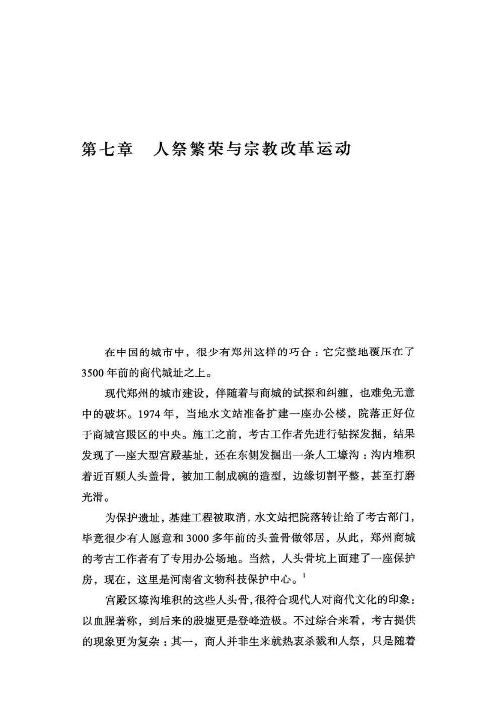
原书阅读器页 132原书物理 PDF 页 130印刷页 118
偃师：从猪到人的献祭
偃师商城的人口数量和繁荣程度虽不如郑州商城，祭祀遗存也不如郑州商城多，但遗址整体保存较好，由其可以观察到早商时期祭祀行为的变化轨迹。偃师商城地层分为三期，时间跨度约200年，我们下面按70年为一期进行估算。
商朝刚刚开国时，偃师商城宫殿区建起了几座大宅院，并在宫殿北侧规划了两处祭祀区：B区和C区，呈东西狭长的长方形，面积均超过1000平方米，四周有夯土围墙，构成两座“祭祀大院”。
这两处祭祀区主要用猪献祭，比如C区，目前发掘了三分之一，埋猪超过100头，据推测，祭祀区使用的猪可能超过300头。
这些猪有整只活埋的，也有去头的或剖成两半的，有多只一起埋的，也有单独埋的；有猪、牛、羊埋在一起的献祭组合，甚至有鹿的躯体。从某些痕迹判断，这些祭牲和祭肉被放在漆木容器之上，祭祀礼仪非常恭敬。
也有多层、多次献祭掩埋的，如H124，堆积分为五层，每层都会埋入若干猪头、整猪或肢解后的猪骨，甚至和一些兔子的骨骼混在一起。
还有的祭祀坑内埋的不是食物，而是用具，如H460，面积超过40平方米，深度超过1.5米，埋有150多件完整的和可复原的陶器，还有大量竹席、草编筐和植物的茎叶堆积。[[fn:2]]
在B、C祭祀区建成近半个世纪之后，商人又在宫殿区东侧开辟了D祭祀区（一期）。这原本是建设宫殿取土形成的一个大坑，深5米，面积约230平方米，埋有72只、分64处埋葬的整猪，并伴有一些牛角和牛下颌骨。[[fn:3]]
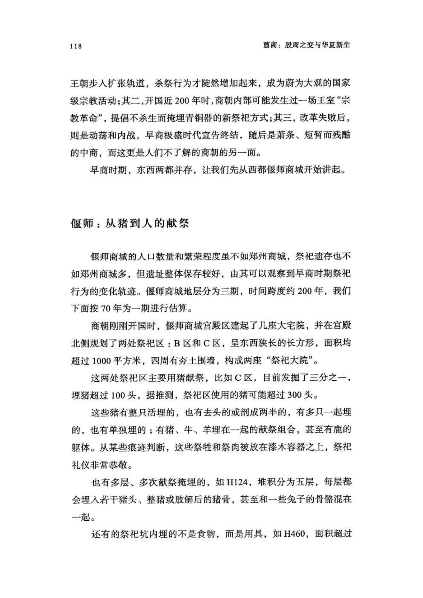
原书阅读器页 133原书物理 PDF 页 131印刷页 119
以上是商朝开国70年内偃师宫殿区的祭祀遗存，明显继承了夏都二里头宫殿区的祭祀礼仪，以埋猪祭祀为主，没有人猪混埋现象，甚至用工程取土坑作为埋祭场的做法也被模仿了过来。
偃师商城整猪祭祀坑局部照片[[fn:4]]（图）
商朝开国近百年时（偃师二期），在B、C祭祀区的东侧，出现了长方形的A祭祀区，面积800多平方米，相当于两个篮球场，内部有各种形式的祭祀现场和祭祀坑，用人和牲畜献祭。
容量较大的是H282祭祀坑，长方形，深3米，近30平方米，接近一间普通客厅。根据发掘现场，偃师商人应该是在土坑刚挖好之后，先在坑底堆积柴草，用大火烘烤坑底和坑壁，然后在南北两壁上挖出很多放置祭品的“壁龛”。
用来献祭的主要是人、牛和猪，肢解、腰斩或全尸的人牲被摆放在坑底，与猪和牛的骨肉一起掩埋，还会铺垫一些石块或陶片，形成坑内堆积。这种堆积一共有14层，基本填满祭祀坑。
坑口边缘处有木桩痕迹，发掘者推测是“用于悬挂祭祀仪仗之物”：献祭时，剁开的人、牛和猪的肉体可能先悬挂在坑壁的木桩上展示，最后才放到坑底掩埋。
目前对该祭祀坑只做了局部发掘，而且发掘报告过于简单，没有祭祀用的人牲和牲畜的数量统计，也没有各层的平面图和照片，但献祭的原理基本清晰，就是向神灵奉献肉食。
除了人、猪和牛，A祭祀区使用的祭品还有很多种。比如，有一片祭祀场，深约1.4米，面积约有130平方米，主要使用的是焚烧的稻谷。也有用狗、鱼类和小麦献祭的。有座用水井改造的祭祀坑，每间隔一定深度埋入一条狗，并摆放一些石块。还有的埋的是牛头和大量的鱼，甚至陶制的乌龟。[[fn:5]]
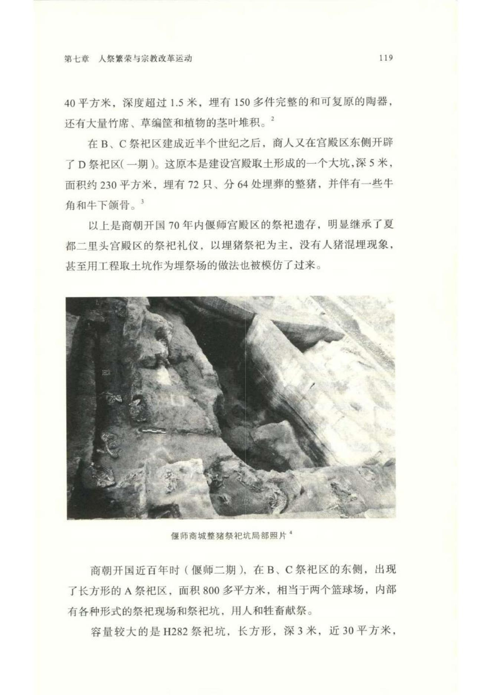
原书阅读器页 134原书物理 PDF 页 132印刷页 120
这些祭祀区一起使用了约半个世纪。偃师商城二期结束时，B区和C区堆积饱和，D区大坑也逐渐被生活垃圾填满。到第三期，祭祀活动主要集中在A区进行，直到商朝进入内乱萧条，偃师商城被废弃。[[fn:6]]
A、B、C、D祭祀区附属于偃师商城宫殿区，只有商王和高级贵族能在这里举行典礼。但宫殿之外的平民区也有各种祭祀遗迹，说明随着宫殿区人祭的普及，平民中的杀人献祭现象也多了起来。
从夏都二里头和偃师商城宫廷区的祭祀行为看，商朝和夏朝存在非常明显的继承性。偃师商人学习了夏朝的宫殿区建设和祭祀方式：祭祀区集中在宫城北侧，以猪为主要祭品；开始时以幼年猪为主，国力强盛后升级为成年猪。在这方面，夏商两代的历程如出一辙。
但不同之处也很明显。二里头-夏朝宫廷区的人祭行为一直不太普遍，祭品也相对单调；偃师商人则在开国近百年后，越来越多地用人献祭，并摸索出了用牛、狗、鱼、鹿、兔以及稻谷等粮食混合献祭的方式——他们可能是认为神灵和人的口味应当是一样的，食谱花样应该多一些。
再来看偃师商城民间的人祭行为。
偃师没有很集中的墓区，墓葬零星分布在城内各地，特别是城墙内侧。在东城墙下的一小片墓葬区，有一座祭祀坑K1，建造于三期（商朝开国约150年），坑口呈椭圆形，长径约3米，向下逐渐变成长方形，整体深近2米，坑底铺约10厘米厚的红褐色土块，沿坑壁有一具十来岁少年的尸体，仰卧，身上压着多块石头——坑中其他位置也铺满了石块。
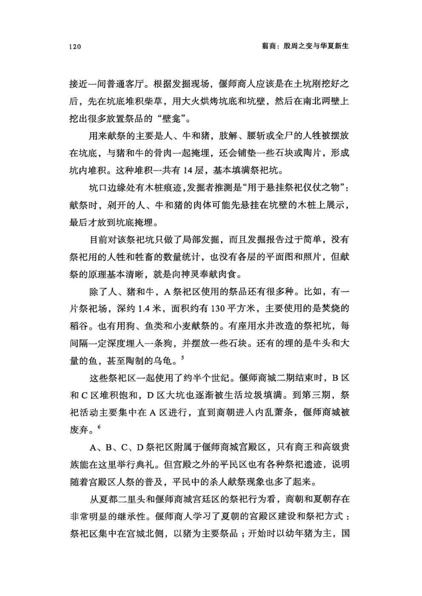
原书阅读器页 135原书物理 PDF 页 133印刷页 121
在石块层之上，又有两具少年尸骨，其中一具的两手反剪交叉在身后，小腿也交叉，应当是被捆绑活埋的。两人臀部都压着石头。坑中央埋的是一头猪。摆放好人和猪之后，坑内填进了约半米厚的土，其中有一块人头骨碎片，宽约10厘米。
然后又埋入两名少年，其中一人俯身屈膝。两人身上也都压着石块，还摆放了陶盆和蚌刀各一件。这一层有大量碎陶片，属于很多种陶器，包括造型很大的鬲和鼎。
综上，整座祭祀坑分三层，共埋入五名少年，身长都在1.3米左右，但有两人小腿反折，全长不到1米。[[fn:7]]
祭祀坑附近的墓葬等级不高，随葬品较少，很难判断K1祭祀坑是为哪位墓主建造的。也许，它是向某种自然神献祭。这片墓地紧邻着一片制陶作坊，坑中也有来自多种陶器的大量碎片，所以K1可能是制陶部族的集体祭祀行为。
偃师K1祭祀坑剖面图和三层平面图（图）
偃师商城宫殿区的H282和H124祭祀坑以及东城墙下的K1祭祀坑，都是分多层、多次掩埋人牲和祭品，整体造型犹如巨大多层汉堡。在商朝后期的殷墟，这种祭祀方式变得少见，主要是在方形坑单层埋入一人或多人。但殷墟末期的后冈H10祭祀圆坑也是分三层埋入73人，说明偃师多层祭祀坑的做法并没有失传。
郑州二期的民间祭祀
再来看郑州商城。它的地层分为四期，前三期和偃师商城基本同步。[[fn:8]]
在商朝开国最初的70年左右（一期），郑州商城的主城墙尚未建造，只有宫殿区有少量夯土建筑，很少发现祭祀遗址。[[fn:9]] 当然，这也可能是遗址被现代市区叠压而发掘面积有限的缘故。
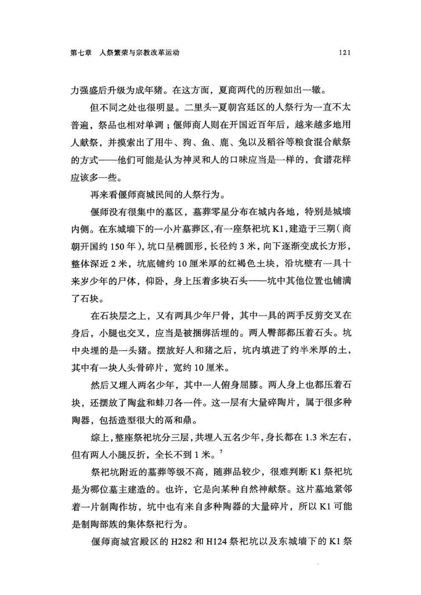
原书阅读器页 136原书物理 PDF 页 134印刷页 122
到郑州商城二期，城墙和宫殿区相继建成，人祭现象也多了起来。但这一时期的人祭地点主要不是宫殿区，而是普通商人的居住区和作坊。
南城外的二里冈地区有一座繁荣的聚落，坐落在一片紧邻小河的高地上。在这里，有很多埋有人尸骨的灰坑。发掘报告用了“掷埋”一词，意为死者躯体或零碎人骨被随意投入坑中。有三座掷埋多人的坑集中在一起，情况比较复杂，我们这里主要介绍其中两座。
H171，开口为椭圆形，直径约2.8米，坑底有两名即将成年的人的骨架，其中，一人的两臂被反绑，手指和脚趾被砍掉，另一人两腿被捆绑，两手被砍掉；此外，他们身下还压着几块别人的腿骨，而再到3米深处，还埋有一颗人头骨。这座坑没有挖到底，因为地下水涌出而中止，所以不确定下方还有没有埋人。
坑内填土中有大量碎陶片，以及兽骨、牛角、骨簪和骨匕等杂物，但在埋人的层位，“多是堆积比较纯净的黄沙层与灰白硬土层”。发掘报告认为，这些人和零碎人骨被埋入时，“是有意而从容的，其埋葬原因，可能与祭祀后的填埋有关”。
再看西侧的H111。这是一座南北向的长方形坑，至少深6.4米，填土有十多层，其中六层有大量人骨和猪狗等家畜：最下面一层，埋一只大猪；向上一层，埋大猪、小猪各一只；再上一层，埋成年人骨架一具、儿童骨架三具，大、小猪各一只，还有人的零碎盆骨、股骨；再上一层，埋儿童骨架一具，大猪一只；再上层，埋成年人骨架一具，大、小猪各一只，狗头一颗；最上层，埋狗一只。多数人和猪的姿势都很不自然，像是被捆绑之后投入坑中的。
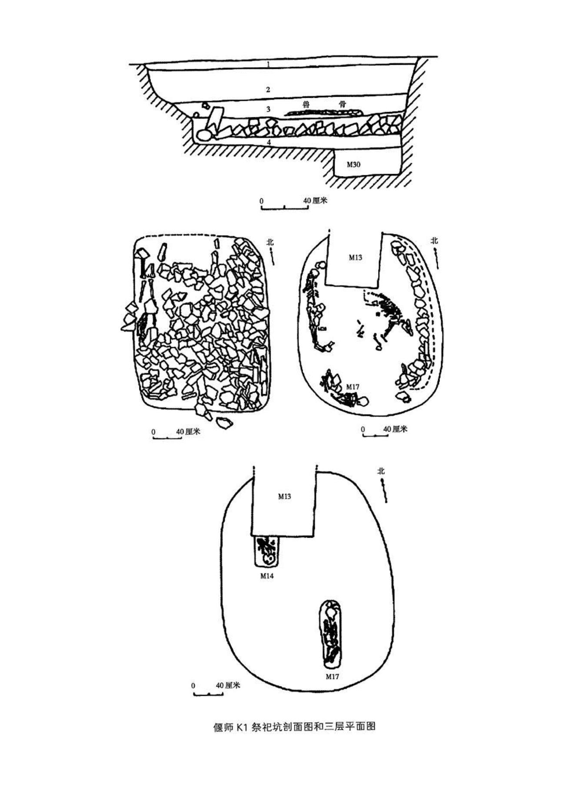
原书阅读器页 137原书物理 PDF 页 135印刷页 123
此外，在二里冈聚落还有多座只埋一人或者埋零碎人骨的灰坑。在二期郑州商城内外，有多座人和猪、牛或狗混合埋葬的祭祀坑。比如，北城墙外的一处制骨作坊遗址，曾发现五具掷埋的人骨架与五具猪骨架。
从上述情况看，商人民间的人祭行为在郑州商城二期已经很流行，而且多和牲祭（牛羊猪狗）混合掩埋。结合偃师商城二期宫殿区的祭祀情况，此时郑州商城的宫殿区应当也有了人祭和牲祭活动，只是可能已被后世破坏。
王室：人狗混合献祭与头盖骨加工
到郑州商城三期，宫殿区出现了人和狗的混合祭祀。
宫殿区东北侧150米处，有一片以“神石”为崇拜对象的祭祀场：场地中心直径5米范围内，有几块扁平的红色砂石块，其中三块堆在一起，最大的一块高约30厘米（底部埋入地下），宽约45厘米，厚约15厘米，犹如一块扁平石碑；在西南侧，另有三块列成一条线。发掘报告将其称为“埋石”，认为它们是接受祭祀的对象。
环绕着这些红石块，有多座埋有狗和人的尸骨的祭祀坑，其中，埋狗坑八座，里面重叠埋入大量完整的狗骨骼，有些狗的腿呈捆绑挣扎状，其中两座坑的底部有散碎人骨以及完整的人骨架两具。多数坑未发掘到底，用狗总量估计应该会超过一百只。
有一座狗坑还出土了一件黄金薄片夔纹饰物，可能是目前发现的中国最早的黄金工艺品。在这座狗坑的外侧，则有14座各埋一人的坑，都极为狭窄，人是勉强塞进去的，没有随葬品，有的手脚呈捆绑状。和狗一样，他们也是献给“神石”的祭品。
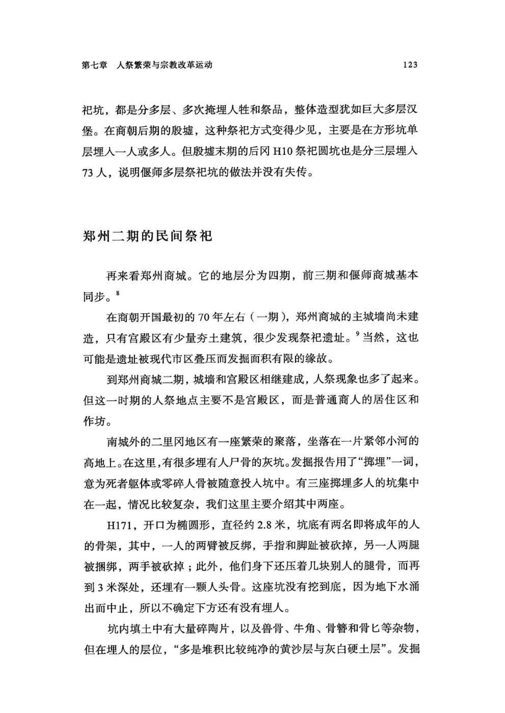
原书阅读器页 138原书物理 PDF 页 136印刷页 124
“神石”东西两侧各有一座五边形土坑，相隔1米多，坑内堆积着深灰色的油腻灰烬，坑壁呈灰黄色，且含有大量油脂，“手触异常光滑”，可能是主祭者割取狗和人牲的油脂在坑中焚烧“燎祭”所致。
在这之前的夏商遗址中，很少看到这种大量用狗和人共同献祭的场景，但稍晚的殷商阶段的铜山丘湾（今徐州市北郊）有一片埋狗和人的祭祀场，场地中心也是几块堆积的大石头。至于这种风俗源自何处，丘湾和郑州之间是什么关系，还有待更多的考古发现来印证。
此外，郑州商城宫殿区曾兴建过多座大型夯土建筑，到三期时，建筑被废弃，在地基上挖了一条南北走向的壕沟，宽2米，里面堆积和掩埋了大量的人头盖骨。壕沟东壁有三个南北走向的柱洞，柱洞之间相距1米多，地面上有很多生活垃圾和加工骨器的残余物，还有很少见的青铜簪以及玉簪和玉铲。据推测，沟的东侧可能有一座工棚。
从这些迹象看，壕沟东侧工棚区并非生产某种特定的产品，而是给宫殿区用户随时加工和改制各种生活用品，也可称为“修理区”。头盖骨应当也是在工棚内加工的，但不知出于什么原因，又堆积到了旁边的壕沟中。
沟内头盖骨从南到北堆成三堆，北堆和中堆相对完整，南堆残破，可能有人为破坏。有四十多枚头盖骨出土时较完好。没有发现人体其他部位的骨头。
这些头骨的加工方式是：沿着眼眶和耳孔部位锯开，只保留碗状的头盖骨部分，再用石头把锯割面打磨光滑。没有发现锯下来的面骨、下颌骨和牙齿等，看来工棚内有分拣处理程序，无用的残骨被运到了别处。
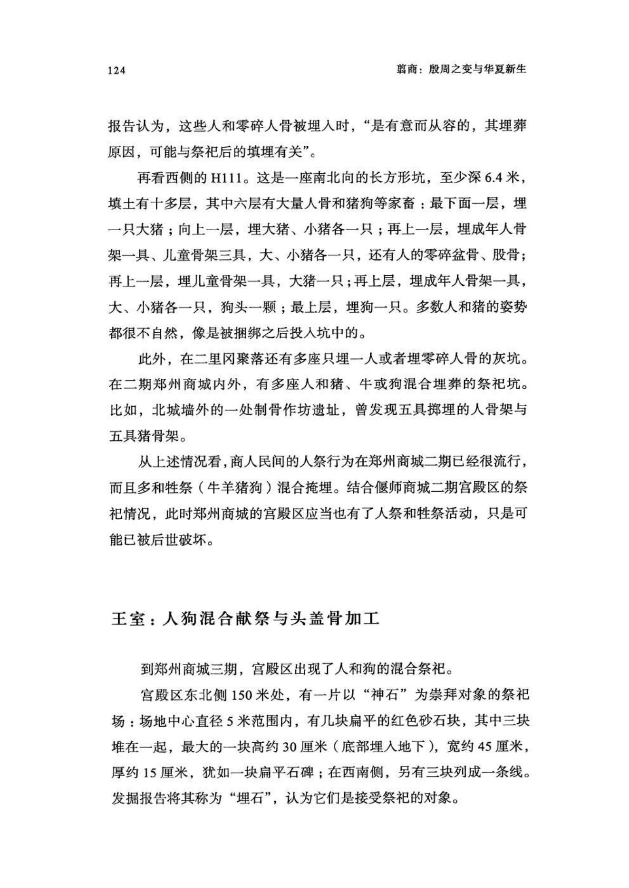
原书阅读器页 139原书物理 PDF 页 137印刷页 125
经鉴定，这些头骨均来自男性，主要是青年，也有少量中年和少年的。和人头骨堆在一起的，有一具带两角的牛头骨。从照片看，有些头骨上好像存在人为的凿孔，但发掘报告没有对此加以详细介绍。目前，商朝只发现这一处批量加工头骨的遗迹。有学者认为，它们是“饮器”，有原始宗教用途，可能是充当某种巫术法器。[[fn:10]]
头骨堆积照片以及两件头骨的锯痕线图[[fn:11]]（图）
这些头盖骨被扔进即将填平的壕沟，然后加以掩埋，显然是遗弃物。但是，它们当中很多都是完好的、经过加工的碗状头骨，而且这条沟也不是抛弃废骨料的场所。这很可能跟郑州商城三期末尾的一场大动荡和风俗变革有关。
在三期的繁荣阶段，宫殿区的头骨制作场并不是特例。郑州的商人还会用人骨制作生活用具，比如，商城北墙外的紫荆山北侧就有一座骨器作坊，从郑州商城二期开始运营，最初只用兽骨，到三期大量出现用人骨加工制作骨器的现象：先把人的肢骨两端的骨臼锯掉，只留下中段骨管，再锯成约8厘米长的骨条，用来磨制骨簪、骨链或骨针。
这片制骨作坊区因被河南省多家省直单位的建筑覆压，考古发掘工作只能见缝插针。目前，已经发现很多制骨半成品和废骨料，没有发现头骨，而隔着仅仅1公里多的宫殿区内，则只有人头盖骨。
除了王室高层，郑州商城三期的普通族邑也大量用人献祭。比如，在南城外的铸铜场就发现了两座祭祀坑：M172，南北正向，长方形坑，东侧紧挨着铸铜操作区，形状像一个标准墓穴，坑底并列埋着四具成年人骨架，头朝正北方，有三具上半身已腐朽。发掘报告推测，“似为杀死后依次并列放入坑中”；M167，造型与M172类似，也埋着四具成年人骨架，多数骨骼已腐朽。
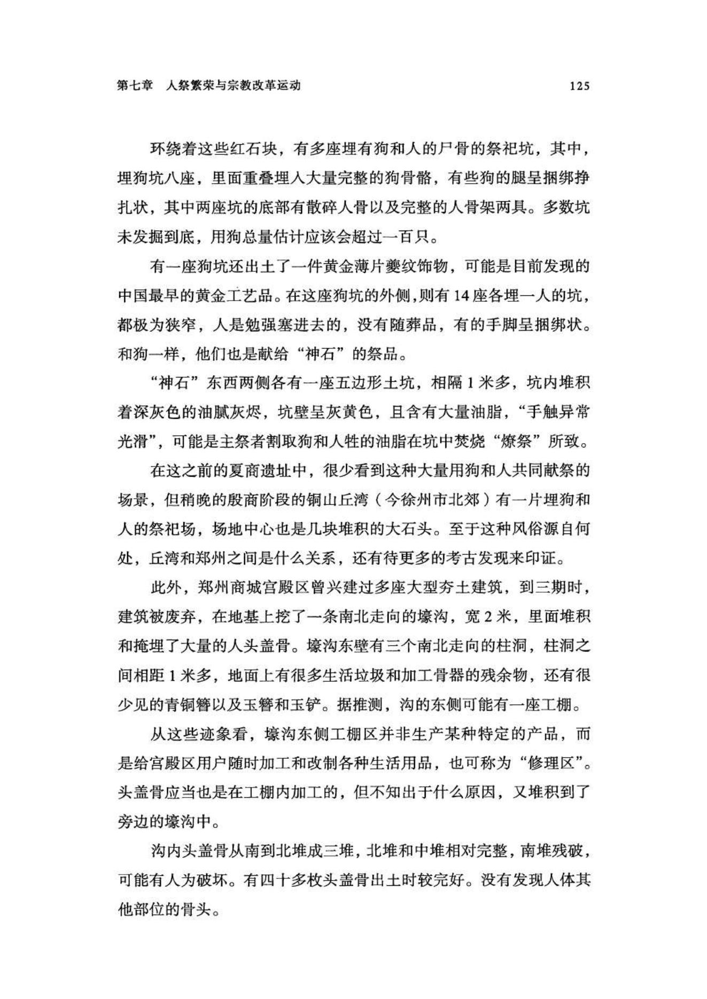
原书阅读器页 140原书物理 PDF 页 138印刷页 126
此外，商城内外还有很多零散分布的祭祀坑：西城外曾发现四座牛祭坑，每座埋入一头牛；城外西南角发现一座较深的坑，在深约3米处埋有两具男子尸骨，骨架不完整，发掘报告推测，“可能与举行祭祀后的杀殉有关”。
人祭成为国家宗教
综合偃师和郑州两城的祭祀历程可见，在商朝一期（最初70年），宫廷和民间祭祀以猪为主，用人的现象很少。但也不能断言完全没有人祭，毕竟自龙山时代以来，华北各地的人祭已经很常见，很可能只是偃师和郑州商城目前尚未发现而已。
商朝二期（开国70—140年间），偃师的王宫区开始批量用人献祭，郑州的普通商人族群也出现大量人祭现象。用牲畜祭祀的现象继续存在。
商朝三期（开国140—200年间），两城宫廷和民间的人祭数量空前增加。三期结束后，两座商城逐渐萧条，人祭现象也同步消失，如后文所述，转移到了商人新的统治中心。
总的来说，商朝开国百年，王室开始大量杀人献祭，从而在偃师和郑州商城的宫殿区形成密集的人祭遗存。而一旦王室献祭的人口数量远超民间祭祀活动，则标志着人祭成为商朝的国家宗教形态。
相比之下，在夏朝—二里头古城，王室的人祭活动并不多，目前只在三期D1宫殿庭院内发现五具尸骨，其他地点的人祭活动则都比较零散，看不出和王权有直接关系。也就是说，夏朝尚未把人祭作为国家宗教。二里头宫殿区的“1号巨型坑”埋有大量献祭用猪，规模已经超过民间，说明夏朝王权对于宗教的依赖已超过民间，只是统治者尚未特别重视人祭。
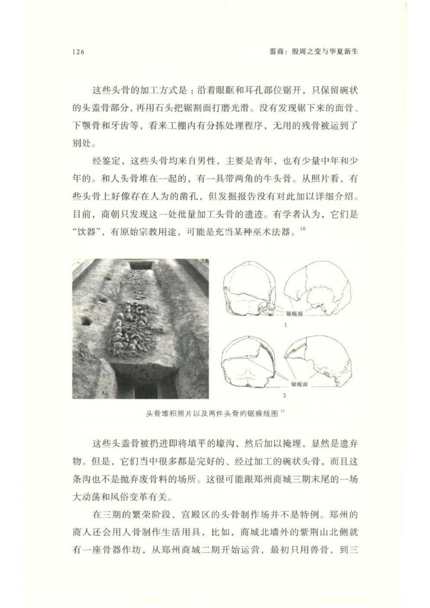
原书阅读器页 141原书物理 PDF 页 139印刷页 127
人祭的迅速增长，和商朝的扩张有同步性。开国50多年后，商人的扩张触角开始伸向晋南、关中东部，甚至湖北省。在新征服地区，商人可以俘获大量人口，除了被用作强制劳动的奴隶，也可以作为献祭材料。
另外，商人的人祭宗教也和他们的复杂来源有关。灭夏初期，来自多个文化的人群融合成新兴的“王朝商族”，因此，他们需要构建一种维系自我认同的宗教文化，而用人献祭是最为明晰和便捷的方式：借此区分执行献祭的“我们”（商族人）和用来献祭的“他们”（非商族群），由此，商族人获得了独一无二的优越感。换句话说，他们用“野蛮”的异族人敬献诸神和先祖，祈求天界的福佑，从而获得君临大地和统治列族的权柄。
在商人的人祭宗教兴盛之际，王室成为人祭活动最大的主办者。这代表着王权和神权的高度融合。[[fn:12]] 比起二里头—夏朝，这是一个新变化：人祭是商朝的国家宗教，也是商族人的全民宗教。人祭行为不仅出现在偃师和郑州商城的宫廷与民间，也被商人带到了各殖民城邑，比如，晋南的垣曲商城和夏县东下冯商城以及老牛坡，不仅有人祭和人殉现象，而且有埋入多人的圆形袋状祭祀坑：
一，夏县东下冯商城的H550，埋入人的尸骨五具、羊和狗各一只。[[fn:13]]
二，垣曲商城的H353，多具尸骨无序叠放，其中一人小腿骨嵌入一枚柳叶形铜镞，显然是被射伤后俘获；M16，用了一名青年女子殉葬。[[fn:14]]
三，在西安的老牛坡商人据点，一座三角形小坑夯筑了三颗两岁左右幼儿的头骨。[[fn:15]]
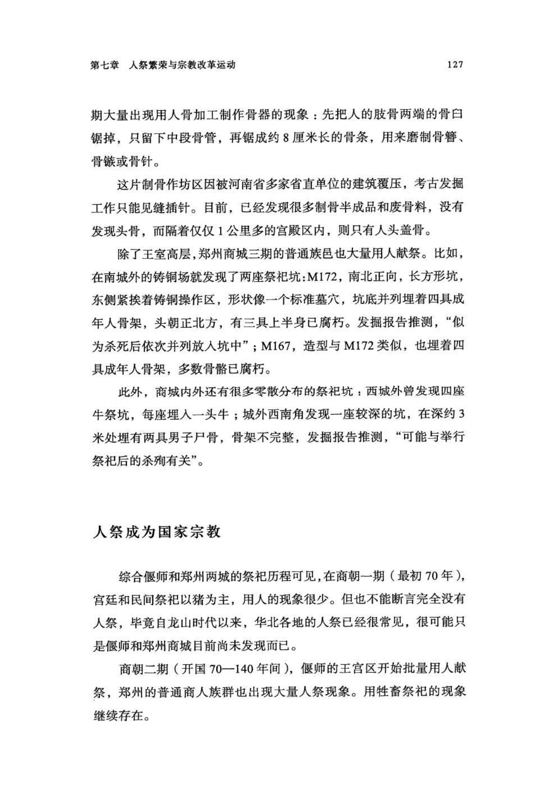
原书阅读器页 142原书物理 PDF 页 140印刷页 128
然而，正当早商国运和人祭宗教双双空前繁荣之际，一种新的宗教理念输入郑州商城，结果引发了非常复杂的后果。这是一场尚未引起注意的商文化革新运动。
被隐藏的宗教改革运动
商朝开国200余年，郑州商城第四期初叶，郑州和偃师商城发生严重萧条，偃师商城迅速被废弃，郑州商城则在衰微中维持了数十年。
刚刚进入中商阶段时，郑州商城出现了一种全新的祭祀方式—— 埋藏青铜器。发掘者在城墙外侧发现了三处这一时期的铜器窖藏坑：张寨南街窖藏坑，1974年发现，有三件铜器；向阳回民食品厂窖藏坑，1982年发现，有13件铜器；南顺城街窖藏坑，1996年发现，有12件铜器。
这三座窖藏坑中都埋有成组的鼎，其他小件铜礼器和兵器则整齐码放在大鼎腹中。铜鼎体型重大，铸造工艺精良，外侧有乳钉纹、夔龙纹和兽面饕餮纹。这些成套铜器的主人显然不是一般贵族，只能是商王。
二里头-夏朝的青铜礼器很少有纹饰，而郑州三座窖藏坑的铜器属于迄今发现最早的商代有纹饰青铜重器，铜鼎上的兽面饕餮纹和良渚古国玉器的神人兽面纹高度相似。
郑州商城三处铜器窖藏坑分布示意图[[fn:16]]（图）
在上古，青铜器非常贵重，一般只有发生战乱或仓皇逃命时才会挖坑掩埋。郑州商城这三座窖藏坑并不符合“逃亡藏宝”的特点：掩埋得非常从容，器物摆放整齐，且伴随着一些仪式性工作。
比如，张寨南街窖藏有大小两件铜鼎，为了让两件鼎的口沿一样高，操作者还特意把大鼎底部的地面挖低了一些；向阳厂和南顺城街的窖藏不仅数量多且码放整齐，坑内地表还进行了整理，有铺设木板和撒朱砂的痕迹；南顺城街窖藏坑分两层，底层埋了几件完整的陶器，第二层才放置青铜器。
南顺城街窖藏坑出土铜鼎及拓片[[fn:17]]（图）
这不会是逃难之前埋藏宝物的行为。“逃亡藏宝”一般出现在王宫或贵族生活区内，但郑州商城的三处窖藏都在主城墙外侧，地势高，视野好，逃难者不会在如此醒目的地方埋藏宝物。所以学者多认为它们是商王举办祭祀的产物，而祭祀的对象可能是地神或天神。[[fn:18]]
这三处窖藏以青铜器为主，只在张寨南街窖藏坑中埋入少量兽骨和人骨，另外两座没有任何人畜遗存，只有器物。对此，发掘报告没有详细介绍。本书认为，这少量兽骨和人骨应该是有意放置的，可能代表了从人牲、牲畜献祭到器物献祭的过渡。
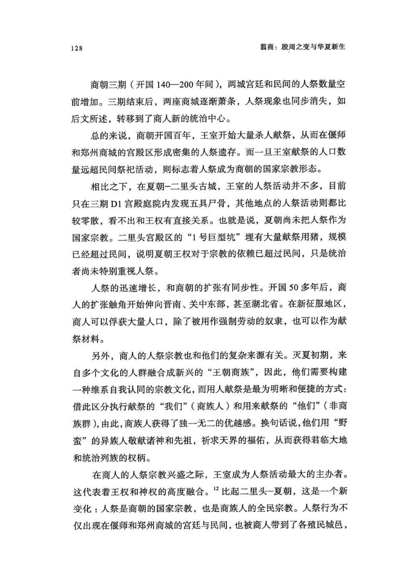
原书阅读器页 143原书物理 PDF 页 141印刷页 129
这种摆放器物并埋藏祭祀的活动，在古老的新石器时代曾有先例。比如，距今8000年前，河北易县北福地遗址的祭祀坑，就埋有陶器、玉器和石器，其中有体型非常大、没有实用价值的石斧，完全是礼仪用途；[[fn:19]] 5000年前的长江中游的屈家岭文化，也有埋各种陶“筒形器”的祭祀现场，到4000多年前，屈家岭文化已演变为石家河文化，但仍在埋葬大量陶塑小动物和人偶献祭。
郑州的铜器窖藏坑距离商朝开国200余年，朝野上下的人祭活动曾达到史无前例的规模，而此时，商王居然开始尝试不杀人、不杀牲的祭祀活动，这着实让人难以理解。按照商人的观念，如此奢华的祭祀物品不搭配一些人牲，肯定属于“暴殄天物”。
但就在早商与中商之交，即商朝开国200年左右时，某位商王可能曾试图改革人祭宗教，用埋葬器物献祭代替杀人和杀牲。这场革新运动的另一个表现是，王宫区锯制头盖骨的工作场戛然而止，大量即将完工的成品被投入壕沟埋葬，似乎商朝上层一夜之间皈依了“不杀人”的新宗教。
变革来得很突然，但仍有先兆可寻。
埋设器物的献祭方式，曾出现在商人遥远的南方据点盘龙城商城。在王家嘴聚落，有H6和H7两座只埋葬器物的祭祀坑，埋有铜器、陶器和玉石器，属于盘龙城文化五期，比郑州商城向阳厂和南顺城街窖藏约早六七十年。这应当是商人征服者受到当地土著文化（屈家岭和石家河文化遗存）的影响。盘龙城商人的墓葬有人殉，但人祭和随意杀人（灰坑葬）的现象很少--这是和中原商人比较大的差别。
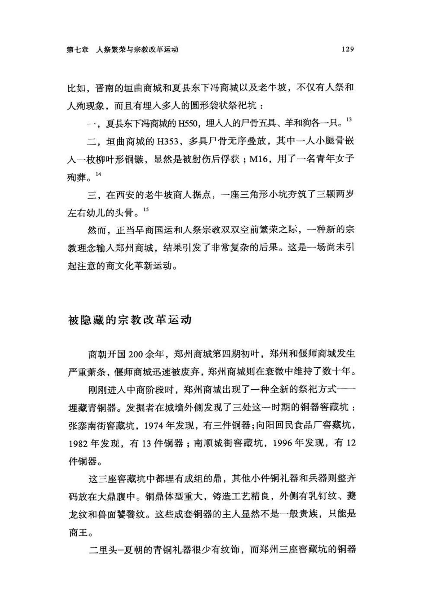
原书阅读器页 144原书物理 PDF 页 142印刷页 130
盘龙城这一支征服者可能和郑州王室联系密切。在郑州商城曾发现有湖北特征的印纹硬陶和原始瓷残片，[[fn:20]] 很可能就是盘龙城征服者向王都输送了制陶工匠的缘故。可以合理推测，受盘龙城商人贵族的影响，某位商王突然接受了不杀人的埋祭理念，开始推行宗教革新，这才有了郑州城外的青铜器窖藏以及被掩埋在壕沟中的头盖骨堆积。
几乎和这场“埋祭改革”同时，商王室内部爆发了激烈冲突和战争。结果，早商极盛时代终结，不仅郑州和偃师商城，各地大大小小的商城也相继沦为丘墟，如垣曲、东下冯、盘龙城等。郑州商城内应该还维持着一个惨淡的朝廷，举行过几次埋祭仪式，但已经失去对王朝的控制力。这段萧条期属于郑州商城第四期。[[fn:21]]
《史记•殷本纪》记载，在商朝第十王仲丁时期，王朝发生了“九世之乱”，此后连续五代（九位商王）王族兄弟或叔侄不停内战，商朝从而中衰：“自中丁以来，废适而更立诸弟子，弟子或争相代立，比九世乱，于是诸侯莫朝但史书记载很有限，不清楚到底是王室的哪些成员发生了争斗。
结合考古发现的青铜器窖藏坑，有可能是仲丁或者其父亲太戊（第九王）发起“埋祭改革”而引发了内战和萧条：改革派朝廷在郑州商城苟延残喘了一段时间，坚持人祭传统的反对派则在外地重新建都，与郑都商城分庭抗礼。双方的内战持续了一段时间，最终，改革派被彻底消灭。
《史记》记载，自商汤开国，商朝一直在“亳”建都，到第十王仲丁“迁于隞”，第十二王河亶甲“居相”，第十三王祖乙“迁于邢”，接连三次迁都皆发生在“九世之乱”前期，可见当时商朝上层的斗争和内战动荡。但这些都城地名目前还难以和考古发现的商城准确对应。
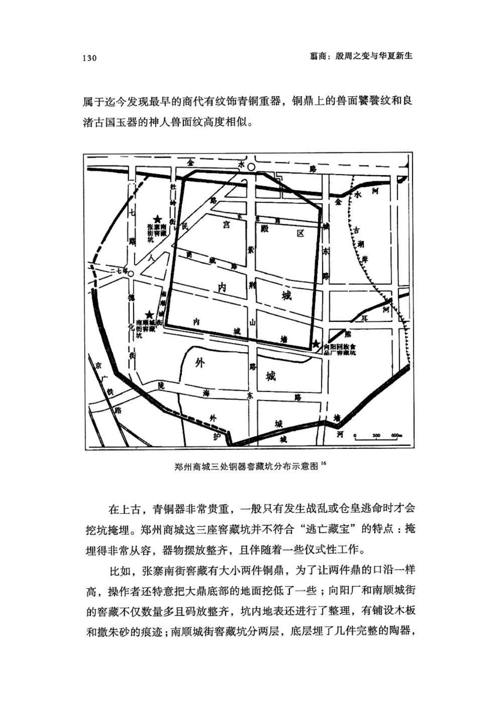
原书阅读器页 145原书物理 PDF 页 143印刷页 131
发生九世之乱的中商可能持续近百年时间，这期间，另一座疑似都城小双桥商邑出现。似乎是出于对“埋祭改革”的敌意，这里的人祭活动不仅格外多，而且残酷。
中商：残忍小双桥
在郑州商城西北约14公里处的小双桥村，有一座巨大的人工土台。当地人传说，它是西汉开国功臣周勃的坟冢，名为“周勃墓”。
1989年，当地村民在“周勃墓”以西数十米的农田耕作时，挖出了一块鞋盒大小的立方体青铜框，上面铸着兽面和复杂的花纹。幸运的是，它被捐献给了考古部门——考古专家这才发现，原来“周勃墓”的年代比周勃要早一千多年。由此，这座中商时代的城邑终于被揭开了面纱。[[fn:22]]
九世之乱后，郑州商城逐渐被毁弃，小双桥成为商王朝几乎唯一的繁华都邑。和郑州、偃师商城相比，小双桥的聚落规模要小一些，留下的文化层也比较薄，说明使用时间不太长。[[fn:23]]
上古时代的小双桥，东侧紧邻一片巨大的湖泊湿地，考虑到偃师和郑州商城的东部也是湿地，看来商人选择都城时有东面临水的习惯。
对“周勃墓”的钻探勘察发现，这是一座中商时代的大型夯土建筑，东西长约50米，南北宽约40米，夯土高9米以上，顶部可能有过宫殿，有被焚毁之后的红烧土堆积。新石器时代以来，还从没有发现过这么高大的夯土台基——良渚古城虽然有更大的人工堆筑土台，但没有经过逐层精细夯打。在之后的很长时间，它创造的纪录也未被打破。没人知道当时的商王为何要建造这座巨大土台。或者这么说，即便在国力衰微的时代，商人仍会做出各种匪夷所思的行为。
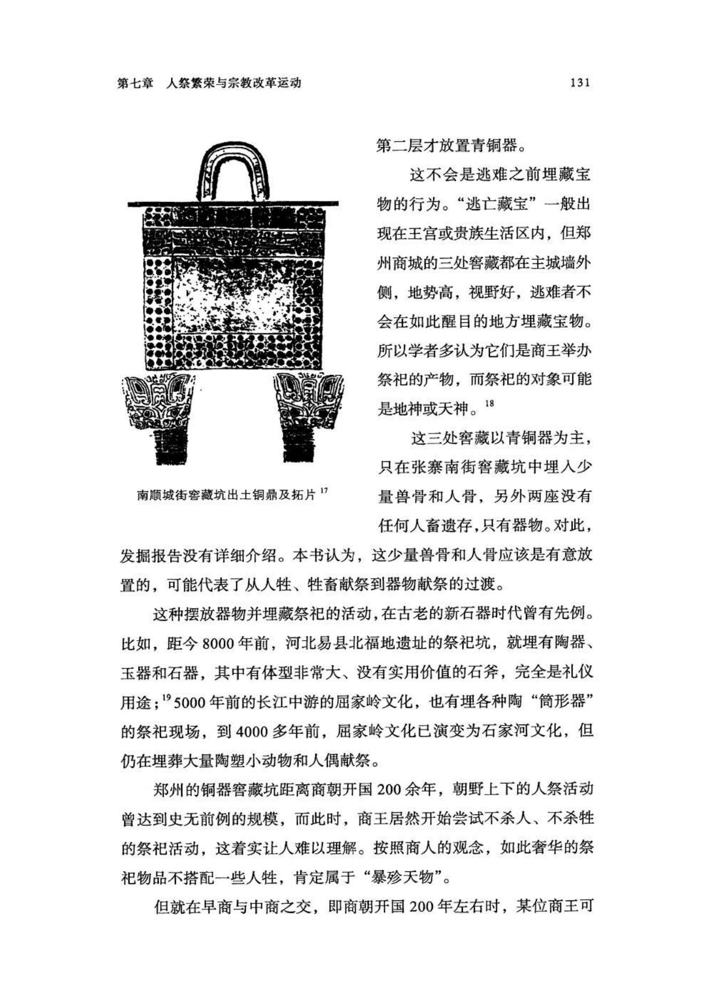
原书阅读器页 146原书物理 PDF 页 144印刷页 132
小双桥考古发掘最集中的地区在“周勃墓”夯土台基的西侧。这里有宫殿建筑和大量祭祀坑遗存，被划分为“宫殿区”和“祭祀区”。其实，两者是混合纠缠在一起的，难以截然分开。
考古工作者在宫殿区外围发现了一些宫城墙的遗迹，夯土墙基宽度只有4米左右，推测是长和宽均为300米左右的宫城。此外，没有发现更大的城墙遗迹，所以小双桥还不能称为“商城”。
截至目前，宫殿-祭祀区的发掘面积不太大，基本局限在南北200米、东西100米范围内，从南到北被分为四个发掘区（IV、V、VIII和IX），有若干夯土建筑基址，还有柱洞、石柱础等，但由于后期破坏严重，难以复原出建筑原貌。
小双桥宫殿区的特点是有大量的人祭坑和随意抛掷的尸骨。看来，这里是郑州商城“埋祭改革”对立面的大本营，是商朝内战的胜利者，商朝的人祭文化也因此传承了下去。
有些人祭坑尸骨太多，发掘报告称之为“丛葬坑”。
先来看V区的H66丛葬坑。它的规模很小（长1.88米，宽0.85米，深0.6米），只相当于一个极为狭窄的单人墓穴，但里面却分三层堆积了大量人骨，以及少量陶炊器残片和兽骨：人头骨数量最多，有31枚，还有些被肢解的其他部位，比如单独的胳膊、肋排等，有些砍断的大腿骨还连着骨盆，但手指和脚趾骨较少，似乎肢解时已经被剁去。
鉴定显示，这些人骨属于青年男性，多数头骨有击打伤痕，有些是钝器造成的裂纹，有些是锐器穿孔，直径在1-3厘米间，有各种形状。
小双桥遗址主要遗迹分布[[fn:24]]（图）
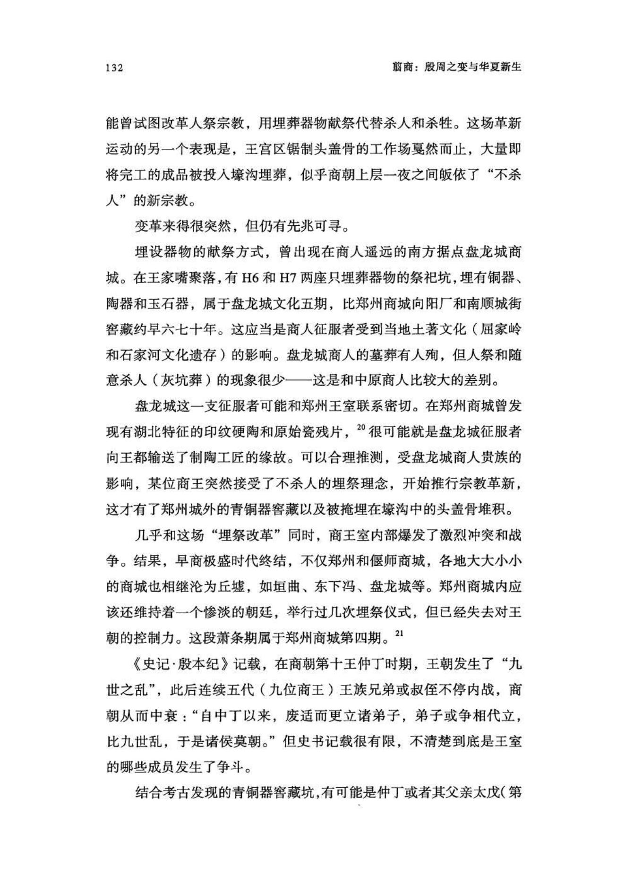
原书阅读器页 147原书物理 PDF 页 145印刷页 133
这些打穿颅骨的锐器，多数不像是商人常用的铜戈，戈刃较薄，按理应当形成狭长的创口；更像是某种铜凿，固定在木柄上，像战斧一样挥动。目前还没有出土过这种兵器。也有个别可能是用戈砍的，如7号头骨，创口大小为2.5厘米 x 0.9厘米。
多数伤痕在头骨的左侧，也有部分在颅顶正上方。发掘报告推测，人牲死前是跪地姿势，行刑者（献祭者）站在人牲面前，右手执兵器猛击人牲头部：很多头骨有两三个不同大小的穿孔，或者兼有锐器穿孔和钝器裂痕，可能会有两名献祭者同时处死一名人牲的情况；有些头骨有两个穿孔，发掘报告推测是某种“双齿”锐器造成的。[[fn:25]] 但有些孔的形状、大小和距离并不一致，很难断定是“双齿”兵器一次打击所致。从这些伤痕看，多数足以一击致命，不知献祭者为何二次、三次打击。目前这还不太容易解释。
H66坑内的两枚穿孔人头骨：穿孔过于规整，像是采用加工玉石器的管钻技术，但发掘报告没有详细信息（图）
有些伤痕有助于还原屠杀的细节。比如18号头骨，左耳后有一个栗子大小的穿孔，应该是凶器凿穿头骨后被卡住，献祭者可能需要踩住头颅用力向外扳才能拔出来，从而造成了骨壁的向外掰裂。此外，头骨下部还连着一截被砍断的颈椎。
这些男性青年的尸骨坑中有一小段三岁幼儿的肢骨，可能是无意中混入的，也就是说，H66至少埋了32人。但从其尺寸看，难以装下31名成年人的尸骨，即使肢解码放也不可能，所以，坑中的体骨不会是全部，而且很可能被剔去了肉，否则骨骼堆积不会如此密集。
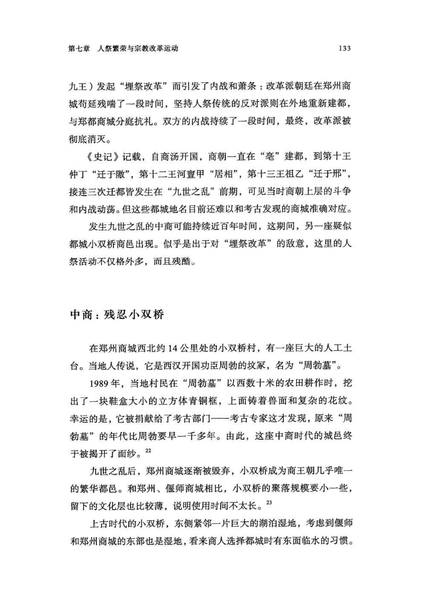
原书阅读器页 148原书物理 PDF 页 146印刷页 134
再看VIII区H18丛葬坑。该坑坑口呈不规则椭圆形，长径约180厘米，短径90厘米，从20厘米深处开始有零星的人骨堆积，主要是头骨和肢骨，没有其他部位的骨头；和人骨混杂在一起的有陶制盆、鬲、瓮等炊器碎片，还有零碎的猪骨等兽骨。
这座祭祀坑保存得比较完整，挖掘者决定将其整体转移到室内展示，所以只发掘了坑内最上层。在最上层，死者已不低于30人。从人骨的零碎状态以及和炊器碎片、猪骨等同埋来看，这些人牲应当是和猪一起被杀死的，然后被献祭者烹饪并吃掉了部分，剩余的骨头连同用完的陶制炊器和食器也被打碎投入H18丛葬坑。
IX区的H63更特殊。这座坑比较大（长10.5米，宽6.8米，深1.7米），平面近似水滴形，最底部挖了一小型圆坑，里面码放了九枚不含下颌骨的人头骨，再向上一层，则埋藏着大量头骨、零散人骨和几具基本完整的人骨架，以及大量陶器残片和兽骨。死者至少有56人。这座坑使用了较长时间，有过多次祭祀。
H63部分相对完整的尸骨照片以及底部的头骨堆积（图）
除了上述三座“丛葬坑”，宫殿区中部还有30座埋葬一到四人不等的祭祀坑，以及抛掷在地层或普通灰坑中的60多具尸骨。一般来说，零散抛掷在地层中的尸骨多是青年女性，“丛葬坑”则多是青年男性。这些尸骨和人祭坑多数在V区，少数延伸到西侧的VIII区。如同上述H66，很多头骨被锐器砸穿，有些尸骨被剁去手脚，或呈捆绑姿势。
位于宫殿区最南端的IV区也有很多座祭祀坑。这个区有冶铸青铜器遗迹，人祭数量不多，主要是各种动物被混杂埋入同一坑内，发掘报告称之为“综合祭祀坑”和“多牲坑”。
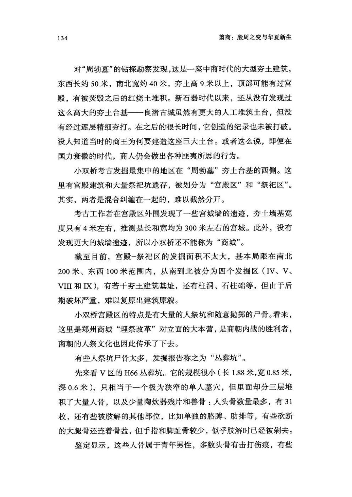
原书阅读器页 149原书物理 PDF 页 147印刷页 135
比如，H6有牛头骨、牛角、牛骨，还有猪、鹤、鸡等动物的骨头，以及大量碎陶片、原始瓷片、绿松石嵌片、骨器、蚌器、石器、残铜器和残玉器，坑中填土含有大量红烧土颗粒、黑色烧土块和炭黑，说明献祭时一直在烧火烹饪食物。
H29有大量炼铜残渣、孔雀石（铜矿石）、各种小片残铜以及石器和骨器，动物骨骼有大象、牛、猪、狗和鹿等，象骨主要是象牙和头骨，有牛角40余只，经统计，至少来自30多头牛。此外，还有一倒扣的泥制熔铜炉。
在IV区的祭祀坑中，埋葬牛角和牛头的数量最多。跟之前的偃师与郑州商城相比，小双桥商邑用猪祭祀的现象急剧减少，用牛献祭则显著增多，但祭祀坑中少有其他部位的牛骨，献祭者可能会分食牛肉，只把牛头和牛角埋入祭祀坑。
从发掘迹象看，IV区有一座大型夯土建筑基址，东西长50多米，南北宽近10米，可能是小双桥城邑的青铜冶铸区。在夏朝—二里头古城、早商的偃师和郑州商城以及晚商殷墟遗址中，青铜冶铸区和宫殿区都相隔一定距离，而小双桥的青铜冶铸区却和宫殿区紧密相连，说明冶铸铜从业者和王室宫廷关系更为密切。但奇怪的是，小双桥的冶铸铜区少有人祭现象，这和之前、之后都不一样。
综上，小双桥聚落存在时间不长，规模也不太大，但已发现很多人祭尸骨，说明中商王都的人祭数量空前增加。
目前小双桥的发掘还不太全面，已发现的平民聚落、作坊和正常墓葬较少，完整的青铜礼器也很少。最典型的青铜器是在“周勃墓”旁边发现的两件青铜方框形构件，有学者推测是安装在木梁柱头部的装饰物。
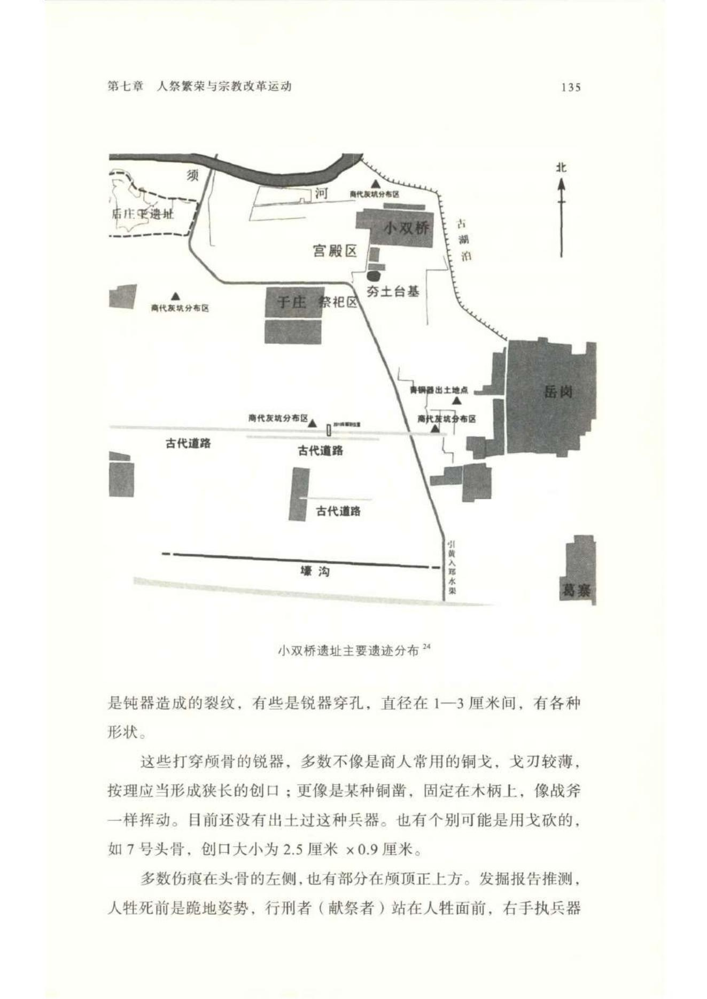
原书阅读器页 150原书物理 PDF 页 148印刷页 136
除了正面的兽面纹饰，方形青铜构件开方孔的侧面还有复杂图案，发掘报告称之为“龙虎搏象图”。龙形长而肥大，和二里头墓葬中的绿松石龙造型接近；“象”是长鼻兽造型，体型较小，但和大象有一定相似，结合IV区H29出土的象骨，小双桥人对大象应该比较熟悉。
方形青铜构件的纹饰拓片（图）
此外，小双桥遗址的有些陶器和石器，与同时代岳石文化的器物比较相似，比如黑皮陶器（在IV区祭祀坑中还多次发现一种类似石锄的长方形穿孔石器，但具体功能不详）。《竹书纪年》中有“仲丁即位，征于蓝夷”的记载，现代学者一般认为蓝夷属鲁中南地区的岳石文化，所以，中商王朝可能发动过征讨山东地区的战争。[[fn:26]] 不过，早在商朝开国时，岳石文化就是商文化的来源之一，到小双桥时期，很可能另有一批东方人群加盟中商，从而带来了新的陶器和石器风格。总体上，小双桥王室和东方族群的关系应当以和平合作为主。
和早商相比，小双桥时期的商朝比较衰弱，突出表现就是小双桥聚落缺乏庞大的城墙、宫殿建筑和仓储体系，晋南和湖北的商城也被放弃。但考虑到小双桥的商王朝能够建造所谓“周勃墓”这种巨大的夯土台基，举行人祭的规模也更大，说明商朝的人祭文化此时已基本定型。
考古工作者在小双桥也采取了粮食浮选法：颗粒数量仍是粟米占绝大多数，[[fn:27]] 折算成重量，粟米居首位，接下来的排名依次是小麦、水稻和黍米。这说明夏朝—二里头时期水稻独大的格局已渐行渐远，湿热气候的顶峰正在过去，黄河南岸逐渐回归旱作农业。
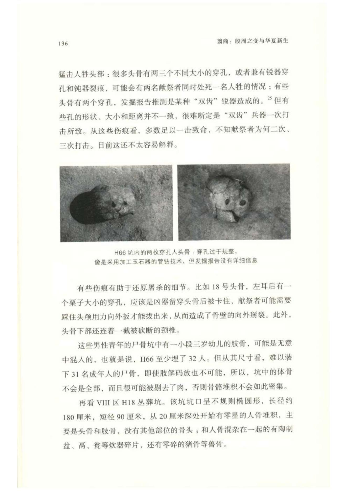
原书阅读器页 151原书物理 PDF 页 149印刷页 137
表六：小双桥遗址出土粮食颗粒及折合重量
| | 粟 | 水稻 | 小麦 | 黍 |合计 |
|------- |------ |----- |------ |---- |-----|
| 粒数 | 1409 | 94 | 127 | 51 | 1681 |
| 千粒重（克）| 2 | 16 | 16 | 7 | |
| 粒数占比 | 83.8% | 5.6% | 7.6% | 3.0% | |
| 折合克数 | 2.8 | 1.5 | 2.03 | 0.36 | 6.69 |
| 重量占比 | 41.9% | 22.4% | 30.3% | 5.4% | |
比起殷墟，早商和中商的考古起步晚，成果也很有限，比如，一直没在郑州和偃师商城发现王室和贵族墓葬区。从殷墟考古看，晚商最盛大的人祭场在王陵区内，所以我们目前见到的早商和中商的人祭场可能还不是当年的主体。
早商和中商共约三百年，在这期间，商人的人祭行为迅速增加，屠杀方式也越来越残忍，虽然可能有过用铜器代替人献祭的改革尝试，但也只是昙花一现。商文明的基本特征已经定型：文字、青铜技术、巨大城池，以及崇尚暴力、热衷人祭的文化。此外，早商的神奇扩张和庞大的仓储设施也是独一无二的，只是那个时代的辉煌和野蛮已经无法完整复原。
以色列考古学家吉迪•谢拉赫认为，在“早期国家”或“复杂酋邦”阶段，社会开始变得更复杂，王权刚刚出现，统治者发现自己的统治体系还不够发达，急需借用一种强大的机制来维护权力，从而导致人祭宗教和战俘献祭行为的产生。[[fn:28]] 不过，为何战争与人祭可以铸牢新兴王权，吉迪却没有多谈。结合前文对新石器末期到中商这上千年人祭历程的梳理，本书认为可以从两方面来理解：理论层面，王的大量献祭（意味着他获得神的福佑）是王权融合神权的标志；现实层面，战争让本国族的民众团结起来一致对外，从而更巩固了王的权力。
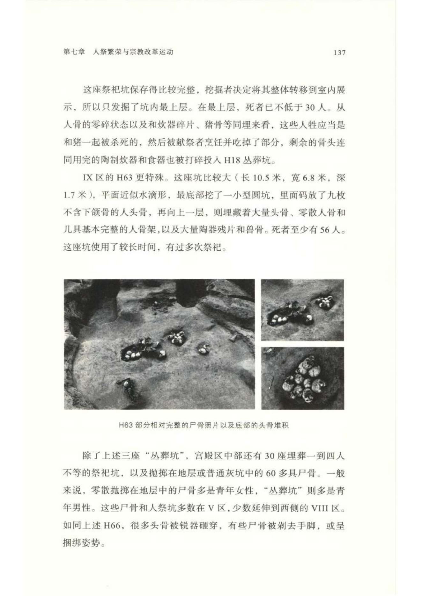
原书阅读器页 152原书物理 PDF 页 150印刷页 138
对于吉迪的论述，我们还可以补充一个背景：“早期国家”之前的部落甚至村落阶段，人祭行为已经广泛存在，原始时代的宗教（或者称之为“巫术”）并不缺乏人祭理念。比如，在龙山文化时期的华北地区，部落间的战争冲突颇为剧烈，多地孕育出“早期国家”的雏形，而且伴随着较多人祭现象。这有吉迪总结的“统治者希望获得牢固统治基础”的因素，但似乎战争本身是形成“早期国家”的主要原因，人祭则更像是战争的副产品。
〔按语：用俘虏祭祀。〕
吉迪的“早期王权倾向乞灵于人祭”的结论，虽符合大多数“早期国家”的特征，但也难免有例外。比如一度非常辉煌的“良渚古国”就并未发现人祭遗存，反倒是解体之后，人祭才在良渚文化的局部地区多了起来。[[fn:29]] 龙山时代，陶寺和石峁这两个古国几乎同时并存，石峁的人祭很密集，陶寺则比较稀少，但后来却还是同步解体，也就是说，人祭宗教并没有能够保障石峁的持续繁荣。在当时的华北，像石峁这种热衷人祭的早期古国要占多数，但都没有逃脱衰亡的命运。
夏朝-二里头古国的人祭遗存也不太多，而且王室的人祭行为还要比民间少。这种情况一直持续到商朝初期，直到又过了近一百年，人祭行为才出现爆发式增长。
总之，从新石器晚期到商代，人祭是比较普遍的文化形态；这方面的特例，是长江中游地区。
注释
1河南省文物考古研究所：《郑州商城：1953-1985年考古发掘报告》，文物出版社，2001年，第477页。
2中国社科院考古所：《河南偃师商城商代早期王室祭祀遗址》，《考古》2002
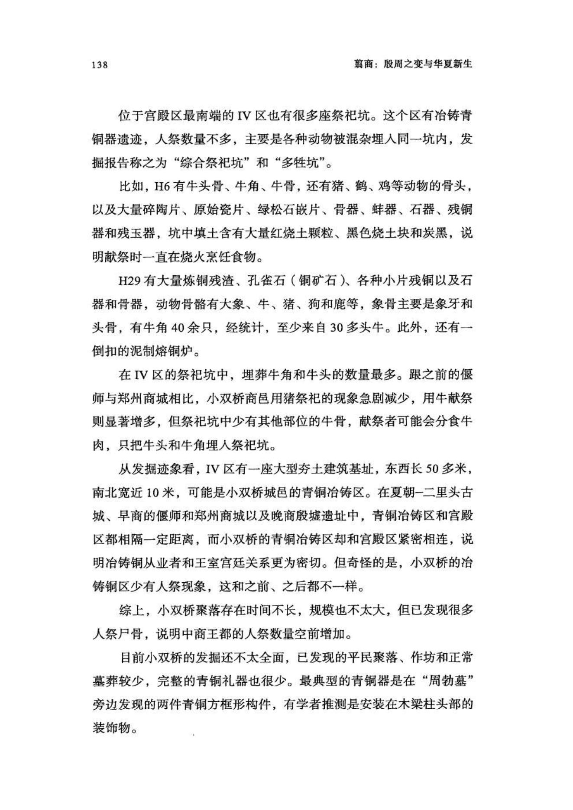
原书阅读器页 153原书物理 PDF 页 151印刷页 139
年第7期。
3中国社科院考古所河南第二工作队：《河南偃师市偃师商城宫城祭祀D区发掘简报》，《考古》2019年第11期。
4同上。
5中国社科院考古所：《河南偃师商城商代早期王室祭祀遗址》。
6根据前引两篇发掘简报，B和C区的使用时间是偃师商城商文化的第一期1段至第三期5段，D区为第一期2段至第三期5段，A区的使用时间为第二期3段至第三期6段。偃师商城共分为三期，7段。
7中国社科院考古所：《偃师商城》第一卷，第428页，K1祭祀坑平面、剖面图也来源于此。
8河南省文物考古研究所：《郑州商城：1953—1985年考古发掘报告》。以下有关郑州商城的基本信息及图片，凡未注明出处的，皆出自该报告，不再详注。
9郑州商城分为四期（二里冈下层一、二期和二里冈上层一、二期，为行文方便，本书只用四期序号），前三期基本和偃师商城同步，属于早商200年时间。郑州第四期属于中商阶段，城市主体和宫殿都已经废弃，但商城内外还有零星的聚落。第四期的时间跨度可能有七八十年，又可分为前后两期。碳十四测年的精度范围尚无法达到数十年维度，故上述时间段都是概略的估值。
10郝本性：《试论郑州出土商代人头骨饮器》，《华夏考古》1992年第2期。
11同上。
12接受人祭最多的，可能是商王的历代先祖，但因为早商时期极少发现甲骨卜辞，所以我们对于商王献祭的对象并不完全明确。
13中国社科院考古所等：《夏县东下冯》，文物出版社，1988年，第155页。
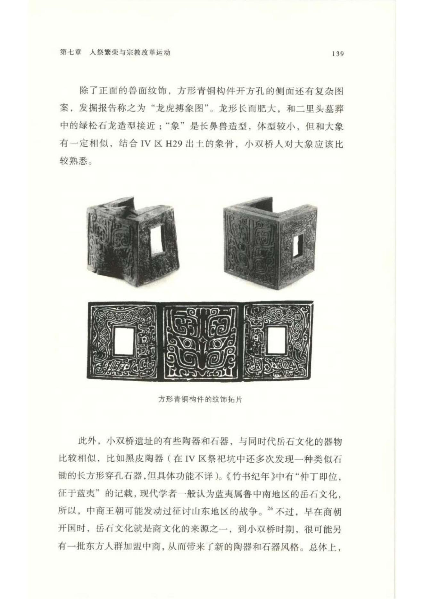
原书阅读器页 154原书物理 PDF 页 152印刷页 140
14中国历史博物馆考古部、山西省考古研究所：《1988—1989年山西垣曲古城南关商代城址发掘简报》，《文物》1997年第10期。
15刘士莪：《老牛坡》，陕西人民出版社，2001年，第67页。
16张国硕：《郑州商城铜器窖藏坑性质辨析》，《中原文物》2018年第1期。
17河南省文物考古研究所、郑州市文物考古研究所：《郑州南顺城街青铜器窖藏坑发掘简报》，《华夏考古》1998年第3期。
18安金槐：《再论郑州商代青铜器窖藏坑的性质与年代》，《华夏考古》，1997年第1期；张国硕：《郑州商城铜器窖藏坑性质辨析》。
19河北省文物研究所：《北福地：易水流域史前遗址》，文物出版社，2007年。
20孙新民、孙锦：《河南地区出土原始瓷的初步研究》，《东方博物》2008年第4期。
21商代中叶这个萧条期，被有些学者划入“中商”阶段，但对于中商涵盖的具体时段又有不同意见，有人把殷墟的最初几十年（渔北商城阶段）也划入中商范围。本书把殷墟阶段全都划入晚商，所以中商阶段更短一些。
22河南省文物考古研究所：《郑州小双桥：1990—2000年考古发掘报告》，科学出版社，2012年。以下有关小双桥遗址的基本信息及图片，凡未注明出处的，皆出自该报告，不再详注。
23对小双桥遗址的有机物碳十四测年显示，遗址使用的时间为公元前1435— 前1412年。这个时段划得有点窄且略有偏早，综合考虑，它基本属于距今3400—3300年范围内。
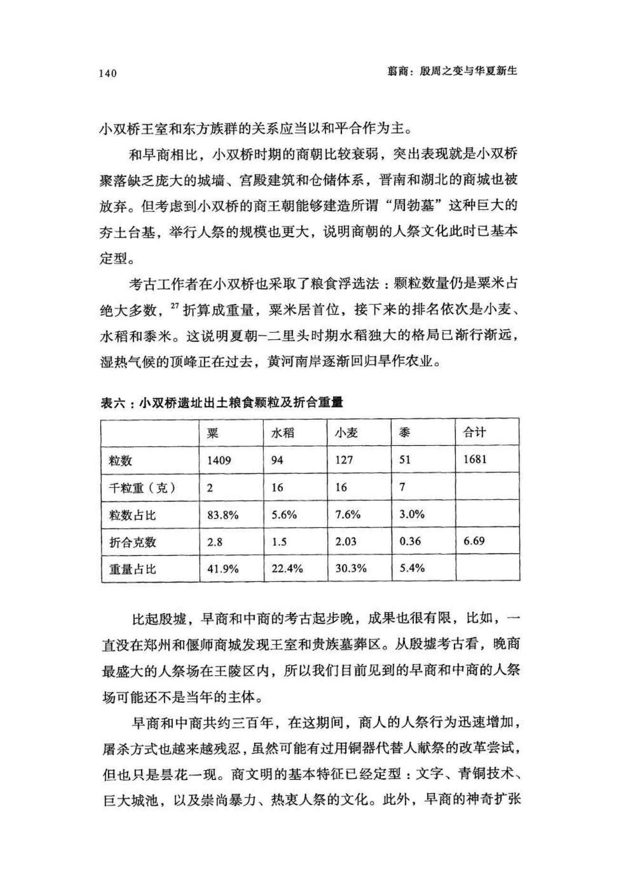
原书阅读器页 155原书物理 PDF 页 153印刷页 141
24季惠萍：《被遗忘的傲都：郑州小双桥遗址》，《大众考古》2018年第12期。
25“我”、“义”（羲）两字的甲骨文造形，像是一把三齿斧状兵器。目前还未发现双齿或三齿兵器，但在商代它们应当存在过。
26陈旭：《郑州小双桥商代遗址即徽都说》，《中原文物》1997年第2期。
27钟华：《河南省郑州市小双桥遗址浮选结果及分析》，《南方文物》2018年第2期。
28Gideon Shelach, “The Qiang and the Question of Human Sacrifice in the Late Shang Period.”
29良渚文化的时间和空间跨度都比较大，但“良渚古国”特指杭州市余杭区的良渚古城共同体，它有堆土兴建的大型“城墙”（土堤）、宫殿区和水坝，检测发现，这些设施的建造时间在距今5000—4900年之间，而在距今4800年之后，王宫区建筑废弃，也不再有王级别的墓葬，显示古国的王权已经解体。此后，古城范围内一直人烟较多，但只能维持部落权力结构。参见浙江省文物考古研究所《良渚古城综合研究报告》，文物出版社，2019年。
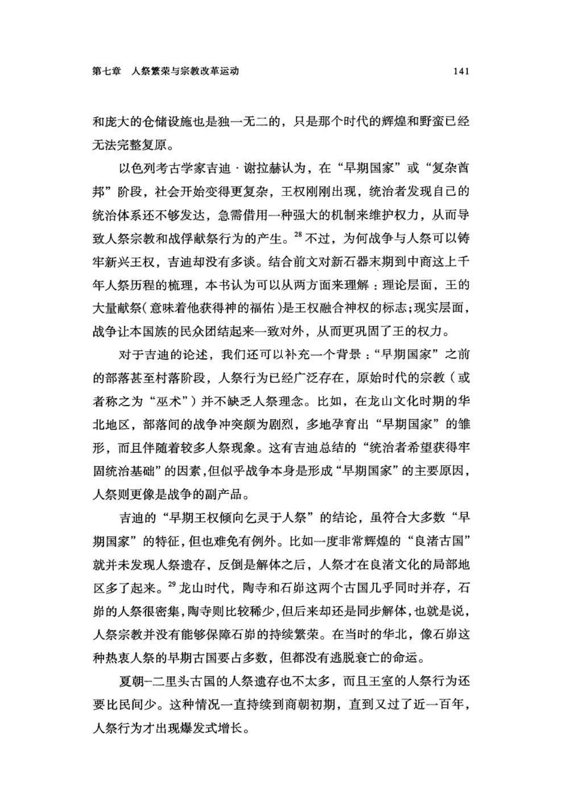
原书阅读器页 156原书物理 PDF 页 154印刷页 142
[[editor-fn:1]]
〔编者注1〕猪祭，狗祭，人祭，在商中期达到最高峰。人祭多为俘虏。反对人祭派的失败是一个因素。
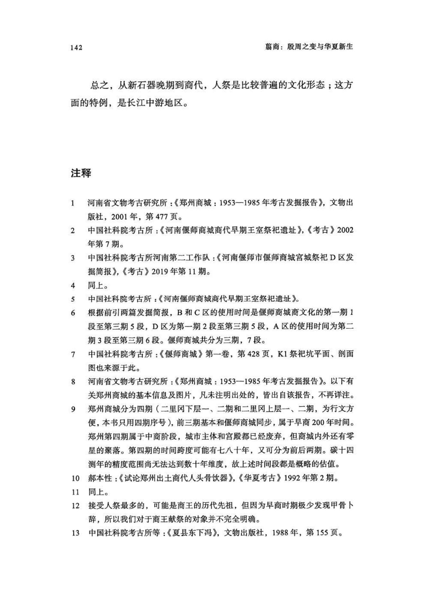
原书阅读器页 157原书物理 PDF 页 155印刷页 143
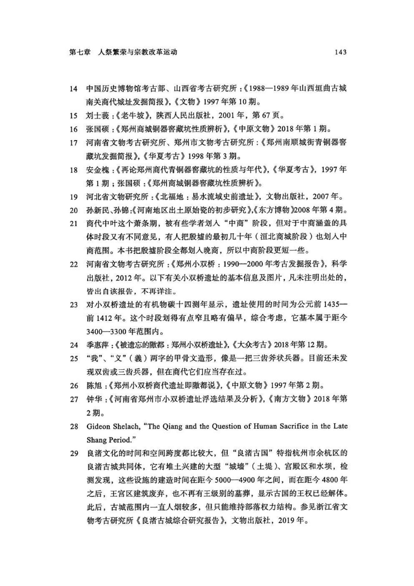
原书阅读器页 158原书物理 PDF 页 156印刷页 144
编辑札记
标记
先在正文中选择文字，再输入拼音；可用“拼音；简注”。